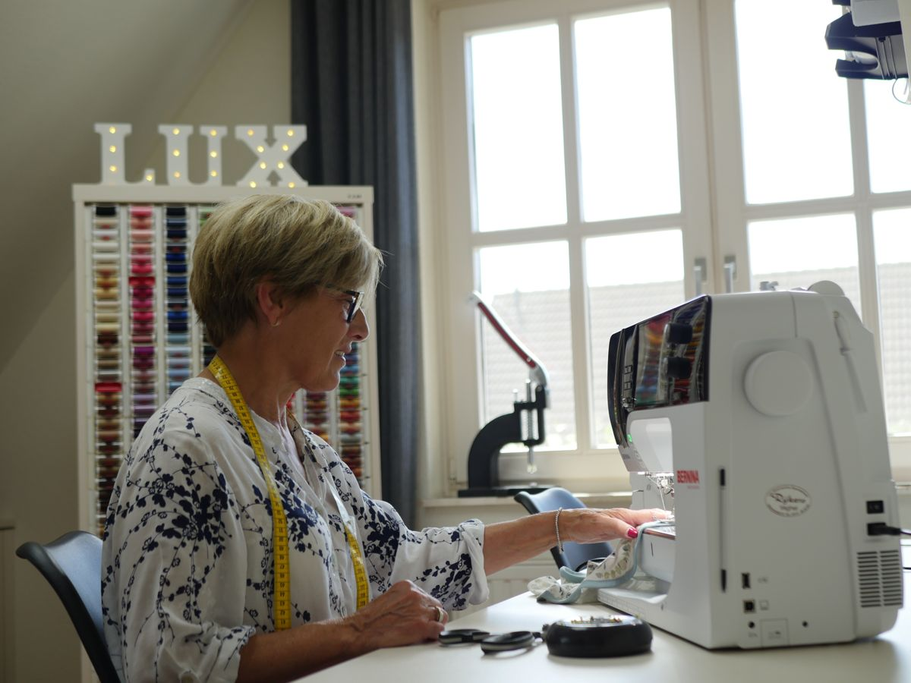
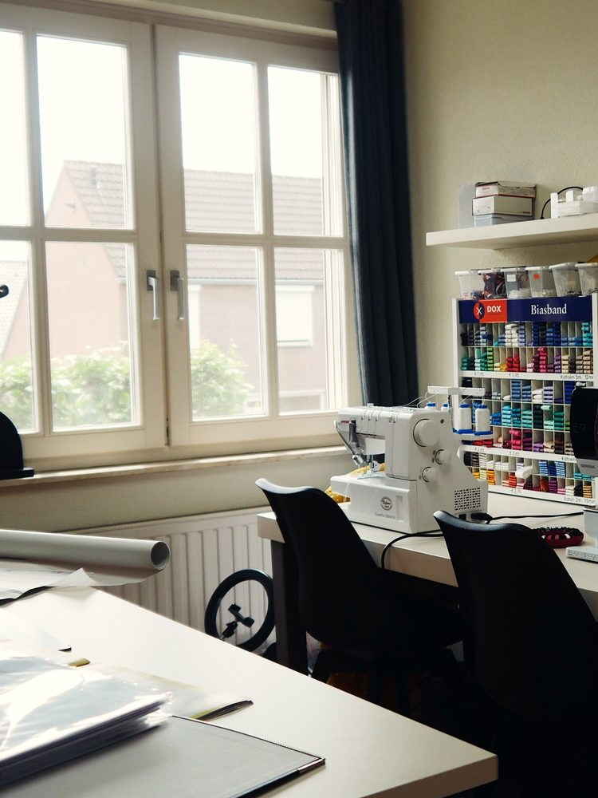
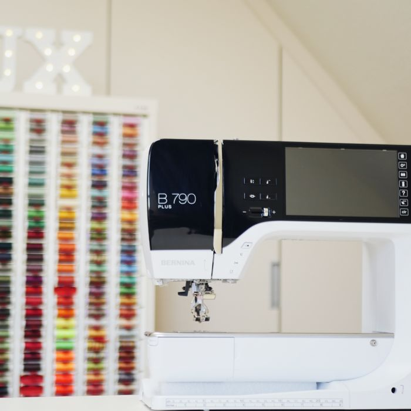
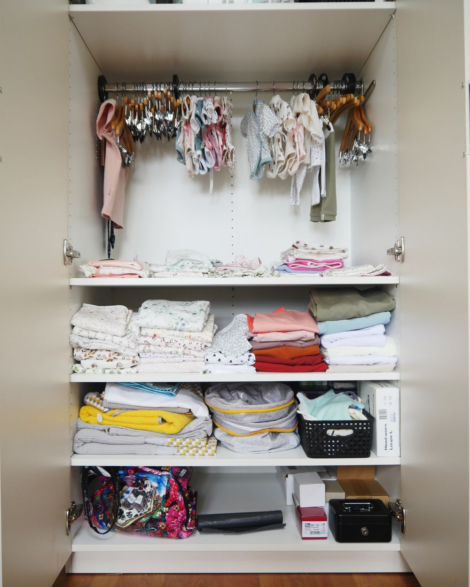
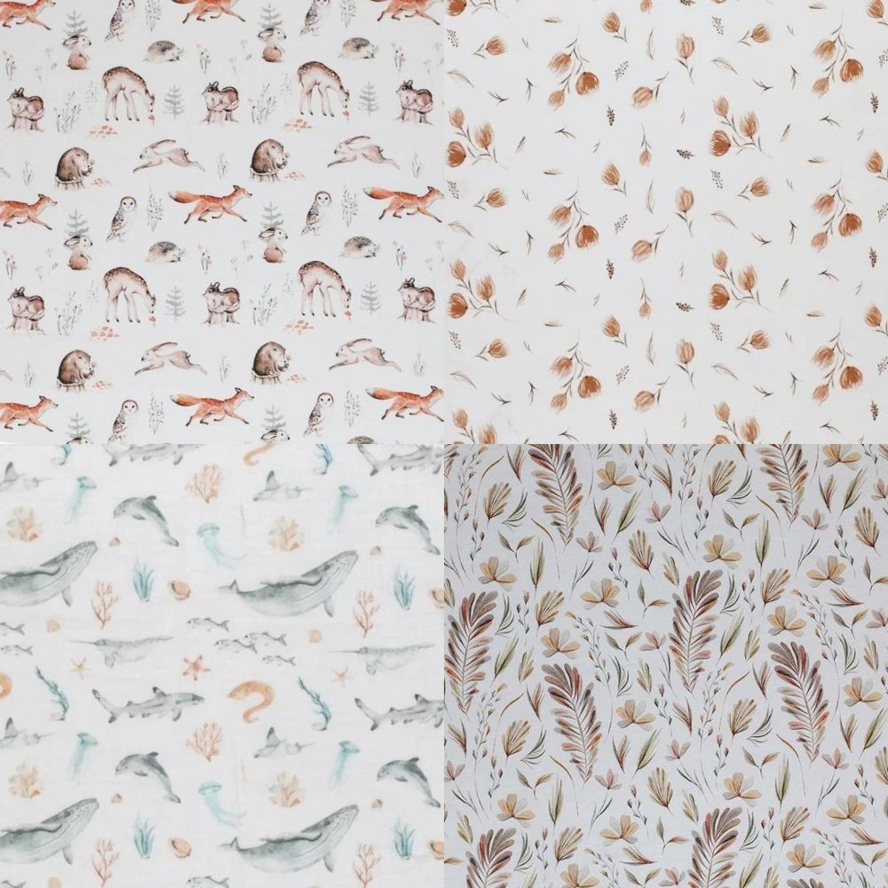
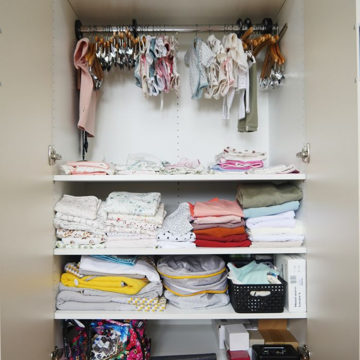

Over Carien
Van de eerste pakjes voor haar kleinkinderen tot maatwerk voor jou
001 — Het atelier
Ik ben Carien Geurts, moeder van twee dochters en oma van vier kleinkinderen. Jarenlang maakte ik kleding voor mezelf en mijn kinderen. Sinds er kleinkinderen zijn, maak ik met veel plezier de babyuitzet en de eerste pakjes, en nu ook voor anderen. Mijn passie is maatwerk in (prematuur)babykleding: net iets anders en persoonlijks.
“Hoe bijzonder is het om één van de eerste pakjes voor iemand te mogen maken.”






002 — Hoe ik werk
01 Samen kiezen
Samen kies je wat het wordt, en in welke stof, kleur en maat.
Van babynest tot kraamcadeaubox of één gepersonaliseerd item. Ook prematuurmaten.
02 Persoonlijk maken
Altijd met naam of eigen detail.
Borduren of belettering op kleding, of siliconen items zoals een bijtring, speenkoord, sleutelhanger, Maxi-Cosi-hanger of mobiel.
03 Met zorg gemaakt
Carien maakt elk stuk met de hand in haar atelier in Ospel.
Mooi ingepakt, klaar om op te halen of te versturen.
003 — Contact
Zin om samen
iets moois
te maken?